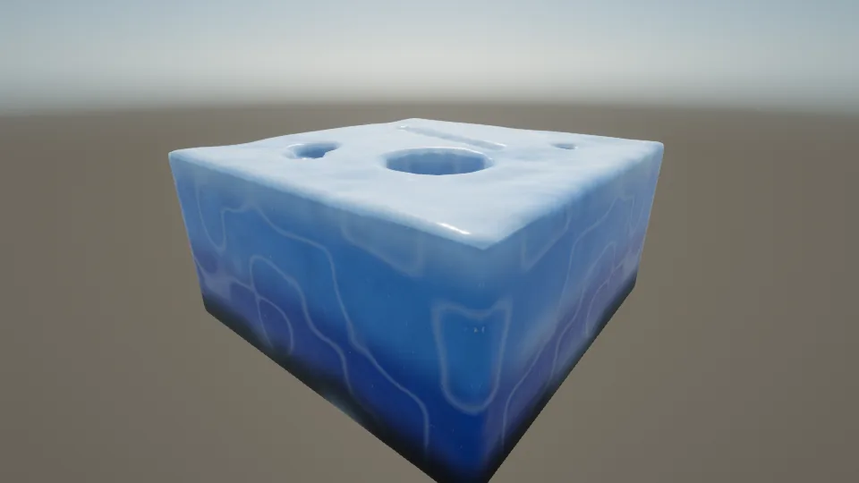
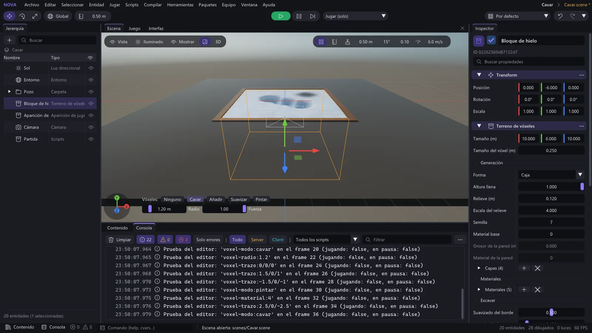

Terreno de vóxeles (cavar, picar y esculpir)
En esta página
El componente Terreno de vóxeles (VoxelTerrain en Lua y en inglés) es un volumen que se deforma donde se cava. No
son cubos que desaparecen: cada golpe deja un cráter suave y orgánico con el borde redondeado, el color de las capas
mezclado y la colisión rehecha al momento. Sirve para picar un bloque de hielo, excavar una mina, abrir túneles con un
soplete o esculpir rocas en el editor.
- Capas de materiales (hasta 32) con dureza (el hielo duro aguanta más golpes), densidad y valor.
Digdevuelve lo extraído por material (m³, kg y valor) para dar al jugador lo que ha picado.- Colisión de Jolt por trozos: el personaje y los objetos chocan con lo que queda (y caen en lo que se cava).
- Multijugador: el servidor manda, cada cliente ve su golpe al momento (predicción) y quien entra tarde recibe lo cambiado.
- Lo editado se guarda con la escena y también en las partidas guardadas.
- Pincel de esculpir y pintar en el editor, y mallas desde Lua (
Mesh.new) para cualquier otra cosa.
La plantilla Cavar (Lua) del Hub es un ejemplo jugable: un pozo con un bloque de hielo por capas que se pica en primera persona, con lo extraído en el HUD.

1. Empezar#
- Entidad > Crear vacía y Añadir componente > Mundo > Terreno de vóxeles.
- La entidad marca el centro de la base del volumen: va de
-Tamaño.x/2a+Tamaño.x/2, de0aTamaño.yy de-Tamaño.z/2a+Tamaño.z/2desde su posición. Su giro y su escala no se usan. - Elige el Tamaño (m) y el Tamaño del vóxel (m) (0,25 m es fino; 0,5 m es más barato). Por defecto sale una caja llena de hielo.
- Pon tus Materiales y Capas (abajo) y pulsa Jugar. Desde un script:
local Picar = Script()
function Picar:Update(dt: number)
if not Input.WasActionPressed("Disparar") then return end
local camara = Camera.GetMain()
local terreno = VoxelTerrain.Find() -- el primer terreno de vóxeles de la escena
local golpe = terreno:Raycast(camara.position, camara.transform.forward, 4)
if golpe then
local r = terreno:Dig(golpe.point, 0.45) -- radio 0,45 m, fuerza 1
for _, m in r.materials do
print(m.name, m.kg, "kg")
end
end
end
return Picar2. Materiales y capas#
Cada vóxel guarda cuánto está lleno (de vacío a lleno) y de qué material es. Los materiales van en la lista Materiales del componente; el primero es el 0, el segundo el 1... (en Lua también se usan esos números).
| Campo | Qué hace |
|---|---|
| Nombre | El que devuelve Dig en materials[i].name |
| Color | Color del material (se mezcla con el de al lado en el paso de una capa a otra) |
| Dureza | 1 normal; 2 = hacen falta el doble de golpes (cada golpe deja un cráter de la mitad de tamaño); 0 = no se puede picar (paredes, fondo, roca madre) |
| Densidad | kg por m³ (hielo 917, nieve 300-500, roca 2600): los kg de lo extraído |
| Valor | Valor por kg (dinero, puntos...): Dig lo devuelve sumado en value |
| Rugosidad | Brillo de la superficie |
| Translucidez | 0 opaco (roca); hacia 1 hielo claro: brillo de los bordes y luz que lo atraviesa a contraluz |
Generación (lo que hay al cargar, sin código):
- Forma: Vacío (para generar desde Lua), Caja (todo lleno hasta Altura llena), Pozo lleno (una caja con pared y fondo de Material de la pared, con su Grosor), Esfera y Cilindro (centrados en el volumen).
- Relieve (m) y Escala del relieve: la superficie de arriba sube y baja (ruido).
- Capas: de Desde (m) a Hasta (m) (metros desde el fondo del volumen) el material es Material, con el borde ondulado (Ondulación y su escala). La primera capa que contiene el vóxel manda; donde no hay ninguna, el Material base.
Cambiar el tamaño, el vóxel o la generación vuelve a generar el volumen (lo editado se conserva si las medidas siguen siendo las mismas). Cambiar colores, dureza o valores no toca lo editado.
3. Cavar, añadir, suavizar y pintar#
terreno:Dig(posicion, radio, fuerza?, opciones?) -- quita
terreno:Add(posicion, radio, material, fuerza?, opciones?) -- pone material
terreno:Smooth(posicion, radio, fuerza?, opciones?) -- alisa (quita picos y rellena hoyos pequeños)
terreno:Paint(posicion, radio, material, fuerza?, opciones?) -- cambia el material de lo que hay- Posición en el mundo y radio en metros.
- Fuerza (1 por defecto): con dureza 1, el cráter entero; con menos fuerza (o más dureza) la forma encoge: fuerza 1 contra dureza 2 deja un cráter de la mitad de radio. Con fuerza 2 contra dureza 2, el entero.
- Opciones:
{ shape = "Sphere" | "Capsule" | "Cone" | "Box", direction = Vec3, length = 2, falloff = 0.5, noise = 0.1, seed = 7 }- Capsule: una zanja o un túnel desde
posicionhaciadirectiondelengthmetros. - Cone: un soplete: el vértice en
posiciony se abre hastaradioalengthmetros endirection. - Box: un cubo de media arista
radio(confalloff = 0ynoise = 0el corte es exacto: útil para pruebas). - falloff: cuánto se redondea el canto del cráter contra la superficie (0 = canto vivo). Por defecto, el Suavizado del borde del componente.
- noise: lo irregular que es el borde (fracción del radio). Por defecto, la Irregularidad del componente.
- Capsule: una zanja o un túnel desde
Dig devuelve lo extraído:
{
ok = true, predicted = false, -- predicted: en un cliente, a la espera de que el servidor lo confirme
volume = 0.41, kg = 376.2, value = 512.9, added = 0,
position = Vec3, -- dónde (mundo)
material = 2, -- el que más se ha quitado
materials = { { id = 1, name = "Hielo claro", volume = 0.12, kg = 110, value = 110 },
{ id = 2, name = "Hielo azul", volume = 0.29, kg = 266.2, value = 402.9 } },
}Los números cuadran: lo que devuelve Dig es exactamente lo que deja de haber (GetVolume antes menos después).
Trozos sueltos: con Trozos sueltos marcado, cada golpe suelta partículas del color del material (solo jugando y no en un servidor dedicado).
4. Consultas#
| Lua | Devuelve |
|---|---|
terreno:Raycast(origen, direccion, distancia?) |
{ point, normal, material, distance } o nil. Va contra los vóxeles (no espera a la colisión rehecha) |
terreno:GetMaterialAt(pos) |
El material del sólido en ese punto (número) o nil si es aire |
terreno:IsSolid(pos) |
true dentro del sólido |
terreno:GetVolume(material?) |
m³ que quedan (de un material o de todos) |
terreno:GetInitialVolume(material?) |
m³ que había al cargar (o al generar desde Lua) |
terreno:GetProgress(material?) |
Fracción ya extraída (0..1) |
terreno:GetRegionVolume(min, max, material?) |
m³ que quedan dentro de una caja del mundo |
terreno:GetMaterial(id) / GetMaterialCount() |
{ id, name, color, hardness, density, value } y cuántos hay |
terreno:GetOrigin() |
Esquina mínima del volumen en el mundo |
terreno:GetStateHash() |
Huella del volumen (la misma en el servidor y en los clientes) |
«Sección completada %»: guarda el volumen de la zona al empezar y compáralo:
function Mina:Start()
self.terreno = VoxelTerrain.Find()
self.inicial = self.terreno:GetRegionVolume(Vec3.new(-5, -6, -5), Vec3.new(0, 0, 0))
end
function Mina:Progreso(): number
local queda = self.terreno:GetRegionVolume(Vec3.new(-5, -6, -5), Vec3.new(0, 0, 0))
return 1 - queda / self.inicial
end5. Generar desde Lua#
Con la Forma en Vacío (o encima de lo generado), en el Start de un script. Se ejecuta en todas las máquinas y
da lo mismo en todas (también con la misma semilla):
local t = VoxelTerrain.Find()
t:Clear()
t:FillBox(Vec3.new(-6, 0, -6), Vec3.new(6, 5, 6), 1) -- caja de material 1
t:FillSphere(Vec3.new(0, 5, 0), 3, 2) -- una cúpula de material 2
t:FillCylinder(Vec3.new(4, 0, 4), 1, 5, 0, false) -- false: vacía (un pozo)
t:FillLayers({ { fromY = 0, toY = 1, material = 3, noise = 0.3 }, -- solo cambia el material
{ fromY = 1, toY = 3, material = 2, noise = 0.5 } }, 7)
-- Función por vóxel en una caja: relleno 0..1 y material (nil = dejarlo como está)
t:FillRegion(Vec3.new(-2, 0, -2), Vec3.new(2, 4, 2), function(p: Vector3)
return if (p.x * p.x + p.z * p.z) < 1 + p.y * 0.3 then 1 else nil, 4
end)
-- Función por trozo (32 x 32 x 32 vóxeles): un trozo entero de un valor no gasta memoria
t:GenerateChunks(function(minimo: Vector3, maximo: Vector3)
if maximo.y < 2 then return 1, 3 end -- todo el trozo de roca
return nil -- dejarlo como está
end)terreno:Regenerate() vuelve a lo que dicen los ajustes del componente (borra lo editado).
6. Física#
Con Colisión marcado, cada trozo con superficie tiene un cuerpo estático de Jolt con su malla (con el Uuid de la
entidad: Physics.Raycast devuelve el terreno). Al cavar, la malla y la forma de colisión del trozo se rehacen en otro
hilo y la forma nueva se cambia en el cuerpo que ya existe: nunca hay un paso sin suelo; hasta que llega la nueva
(unos milisegundos) sigue la de antes. Lo que estaba dormido encima se despierta y cae en el hueco. Los personajes
(CharacterController) chocan con el terreno como con cualquier malla.
7. Multijugador#
- El servidor manda.
Dig,Add,SmoothyPainten el servidor (o sin red) se aplican y se envían a todos como operaciones (posición, radio, fuerza, forma, semilla) numeradas y en orden fiable. Cada máquina las aplica igual: todas acaban con el mismo volumen (GetStateHash). - En un cliente, la edición se ve al momento (predicción,
predicted = true) y se pide al servidor. Si el servidor la acepta, ya está; si llega antes otra edición del servidor, el cliente deshace sus predicciones, aplica la del servidor y las vuelve a aplicar encima. Si el servidor la rechaza, el cliente la deshace. - El servidor valida cada petición: Los clientes editan, Radio máximo (cliente) y Ediciones por segundo
(cliente) del componente, y el evento
voxel:request, que se puede cancelar:
AddEventHandler("voxel:request", function(terreno, peticion, jugador)
local personaje = Network.GetPlayerEntity(jugador)
if not personaje or Vec3.Distance(personaje.position, peticion.position) > 5 then
CancelEvent() -- demasiado lejos: el cliente deshace su golpe
end
end)- Lo extraído de verdad llega en el servidor con el evento
voxel:dug (terreno, resultado, jugador): ahí se da el material al inventario del jugador. En el cliente, el resultado deDigsirve para el HUD al momento. - Quien entra tarde recibe los trozos cambiados durante la partida (comprimidos, en fragmentos) y el número de la última operación; las que lleguen mientras tanto esperan su turno.
- Si algo se pierde, el cliente se recupera solo: si tras 2 segundos sigue esperando el estado (por ejemplo, porque aún cargaba la escena cuando llegó) o una operación que falta, lo pide otra vez al servidor y se pone al día.
8. Guardar y cargar#
- Con la escena: al guardar se escriben solo los trozos que difieren de lo generado (comprimidos en el
.scene). - Partidas guardadas:
local datos = terreno:Serialize()(texto) yterreno:Deserialize(datos)al cargar (devuelvefalsesi las medidas no encajan). Por ejemplo conSaveGame.Save("partida", { hielo = terreno:Serialize() })y, al cargar,terreno:Deserialize(SaveGame.Load("partida").hielo).
9. Editor#
Con una entidad con Terreno de vóxeles elegida aparece una barra abajo en el visor Escena: Ninguno, Cavar, Añadir, Suavizar y Pintar, con el Radio, la Fuerza y el Material (al añadir y pintar). Con una herramienta elegida, la esfera del pincel sigue al ratón sobre el terreno y el clic izquierdo (mantenido) edita; Mayús cambia entre Cavar y Añadir. Cada trazo se deshace con Ctrl+Z. La caja del volumen se dibuja en el visor.

Caras exteriores: marcado, se ven los lados y el fondo del volumen (un bloque suelto). Desmárcalo cuando el volumen está metido en un pozo o en el suelo: esos triángulos no se hacen (con un bloque de 128 x 128 m, más de la mitad).
10. Rendimiento#
Medido con un pozo de 128 x 64 x 128 m lleno al 85 % con capas, sin caras exteriores y 20 excavaciones por segundo durante 4 s (RTX 5060 Ti, otro programa compilando a la vez):
| Vóxel de 0,5 m | Vóxel de 0,25 m | |
|---|---|---|
| Vóxeles | 256 x 128 x 256 | 512 x 256 x 512 |
| Generar | 24 ms | 156 ms |
| Mallas y colisión iniciales | 49 ms | 197 ms |
| Trozos con malla / triángulos | 64 / 182 000 | 316 / 734 000 |
| Memoria de los vóxeles | 14 MB | 63 MB |
| Hilo principal por frame (media / p99 / peor) | 0,08 / 0,64 / 1,3 ms | 0,16 / 1,4 / 1,7 ms |
| Aplicar una excavación (hilo principal) | 0,03 ms | 0,08 ms |
| Malla de un trozo (otro hilo, con sus buffers) | 5,8 ms de media | 5,4 ms de media |
| Forma de Jolt de un trozo (otro hilo) | 1,4 ms | 1,3 ms |
| Cambiar la forma en Jolt (hilo principal) | 0,01 ms | 0,006 ms |
| De la excavación a verla y chocar con ella | 22 ms de media (41 máx.) | 12 ms de media (29 máx.) |
Sin tirones a 60 fps: el hilo principal solo aplica la edición y recoge lo que terminan los hilos de trabajo; las mallas,
los buffers de la GPU y las formas de colisión se hacen fuera. VoxelTerrain.GetStats() da estas medidas en tu juego.
Consejos: un trozo todo igual (todo aire, todo roca) no gasta memoria ni dibuja nada; usa Caras exteriores desmarcado dentro de un pozo; para mundos muy grandes, varios terrenos de vóxeles juntos o un vóxel de 0,5 m.
11. Mallas desde Lua (Mesh.new)#
Para cualquier malla hecha por código (una rampa, un trofeo, una gema con colores):
local m = Mesh.new("Rampa")
m:SetVertices({ Vec3.new(0, 0, 0), Vec3.new(2, 0, 0), Vec3.new(2, 1, 0), Vec3.new(0, 0, 2), Vec3.new(2, 0, 2), Vec3.new(2, 1, 2) })
m:SetIndices({ 1, 3, 2, 4, 5, 6, 1, 4, 6, 1, 6, 3, 2, 3, 6, 2, 6, 5 }) -- triángulos, desde 1, antihorario de frente
m:SetColors({ Color.new(1, 0.5, 0.2), Color.new(1, 0.5, 0.2), Color.new(1, 0.9, 0.3),
Color.new(1, 0.5, 0.2), Color.new(1, 0.5, 0.2), Color.new(1, 0.9, 0.3) })
m:RecalculateNormals()
m:Apply(self.entity) -- la sube y la pone en el MeshRenderer de la entidadSetVertices,SetIndices(desde 1),SetNormals(sin ellas se calculan),SetUVs(para el material del MeshRenderer),SetColors(con colores se dibuja con ellos, con luz y sombras, sin textura),RecalculateNormals,Clear,GetVertexCount,GetTriangleCount.Upload()devuelve su Asset (el mismo cada vez que se actualiza): vale paraMeshRenderer.modely para un Collider con forma Malla.Apply(entidad)hace lo mismo y pone el MeshRenderer.
12. Cómo funciona#
- Rejilla por trozos de 32 x 32 x 32 vóxeles. Cada vóxel guarda su relleno (0 a 255; la superficie pasa por la mitad) y su material. Un trozo todo igual guarda solo esos dos números. Los datos de un trozo editado se comparten con los mallados en curso y se copian al escribir: los hilos de trabajo leen una foto fija.
- Mallado Surface Nets: un vértice por celda que corta la superficie (la media de los cortes de sus aristas) y un cuadrado por arista que la cruza. Cada trozo lee también las muestras de borde de sus vecinos, así que los vértices compartidos salen idénticos: sin grietas entre trozos. Normales suaves del gradiente del relleno, color mezclado en un radio de tres vóxeles y oclusión ambiental según el relleno de alrededor.
- Excavar: el relleno de cada vóxel baja hasta el de la forma tallada (su distancia a la superficie nueva, con un vóxel de transición: sin escalones) y el canto contra la superficie de antes se redondea. La dureza encoge la forma. Lo quitado se cuenta en unidades de relleno por material, así que lo extraído cuadra exacto.
- Shader (
engine/shaders/voxel.hlsl): PBR con las sombras del sol y de las luces, IBL, calcomanías y niebla; relieve fino procedural en 3D (sin texturas ni costuras) y, en el hielo, brillo de Fresnel, luz que lo atraviesa a contraluz, vetas y burbujas. - Determinista: las mismas operaciones sobre los mismos datos dan lo mismo en todas las máquinas.
- Código:
engine/nova/voxel(datos, mallado, sistema, render y Lua),engine/nova/render/MeshLua.cppyeditor/voxel. Pruebas:tests/test_voxel.cpp. No usa librerías de terceros.
13. Límites#
- El giro y la escala de la entidad no se usan (el volumen va alineado con los ejes del mundo).
- Hasta 4096 vóxeles por eje y 32 materiales; los colores van por vértice (sin texturas por material).
- Sin niveles de detalle: para volúmenes enormes, varios terrenos o un vóxel más grande.
- La generación desde Lua se hace en cada máquina (no viaja por la red): genera en el
Starto usa los ajustes del componente.